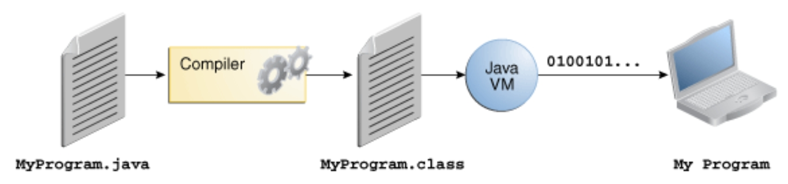
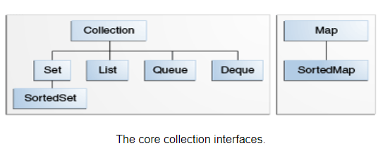

TEOREMA BOHM JACOPINI
Ogni algoritmo può essere implementato utilizzando solo tre strutture di controllo fondamentali:
-
- Sequenza → esecuzione di istruzioni una dopo l’altra.
-
- Selezione → scelta condizionale (if…then…else).
-
- Iterazione → ripetizione (while, for).
PROGRAMMAZIONE A OGGETTI (OOP)
- Nasce per rendere più intuitiva la programmazione
PRINCIPI FONDAMENTALI della OOP
- Incapsulamento
- Organizzare il codice dividendo i problemi in più parti (classi, metodi).
- Nascondere i dettagli implementativi, mostrando solo ciò che serve all’utilizzatore (information hiding).
- Non significa “sicurezza”, ma leggibilità e manutenibilità.
- Si realizza tramite modificatori di accesso (
private,public,protected). - Accessors (get) → metodi che leggono attributi privati.
- Mutators (set) → metodi che modificano attributi privati.
- Astrazione
- Consiste nel lavorare con modelli semplificati (classi, interfacce, oggetti) senza conoscere i dettagli interni.
- Permette di concentrarsi sul cosa fa un oggetto, non su come lo fa.
- Esempio: usare
List<String>senza sapere se dietro c’è unArrayListo unLinkedList.
- Ereditarietà
- Permette a una classe (sottoclasse) di riutilizzare attributi e metodi di un’altra (superclasse).
- Riduce ridondanze e favorisce il riuso del codice.
- Supporta la costruzione di gerarchie (es.
Veicolo→Auto,Moto). - In Java è singola (una sola superclasse), ma si possono usare più interfacce.
- Polimorfismo
- Capacità di un linguaggio di gestire in modo uniforme entità con comportamenti diversi.
- Due forme principali:
- Overloading (polimorfismo statico/di compilazione) → stesso nome di metodo ma parametri diversi.
- Overriding (polimorfismo dinamico/di runtime) → una sottoclasse ridefinisce un metodo della superclasse con comportamento diverso.
COME FUNZIONA LA JAVA VIRTUAL MACHINE
- il codice sorgente(il codice in Java) e il file sarà contraddistinto in .Java
- il bytecode è il risultato dell’operazione di compilazione fatta da Javac il file sarà in .class La jvm traduce in real-time il bytecode(.class) in linguaggio macchina 
ELEMENTI FONDAMENTALI DELLA PROGRAMMAZIONE A OGGETTI
CLASSI
In Java una classe è il modello che definisce lo stato e i comportamenti degli oggetti. Una dichiarazione tipica comprende campi, costruttori e metodi.
- I campi (o attributi) sono variabili che descrivono lo stato dell’oggetto.
- Il costruttore è un metodo speciale che inizializza i campi quando l’oggetto viene creato.
- I metodi definiscono le azioni che l’oggetto può compiere e possono modificare i campi o eseguire altre operazioni.
Le classi possono essere estese tramite ereditarietà: una sottoclasse eredita campi e metodi della superclasse e può aggiungere elementi propri.
In generale, la dichiarazione di una classe può includere: modificatori di accesso (public, private), il nome della classe, un’eventuale superclasse (extends), eventuali interfacce (implements), e infine il corpo racchiuso tra {}.
METODI
- azioni eseguibili da un oggetto.
- un metodo
public int calcolaDoppio(int numero) { return numero * 2; } - prevede
- modificatori
- tipo di ritorno
- nome del metodo
- scritto in camel case
calcolaDoppio
- scritto in camel case
- lista di parametri
- corpo del metodo con return
- FIRMA DEL METODO
- La firma del metodo è ciò che distingue un metodo dagli altri all’interno di una classe.
composta da:
- La firma del metodo è ciò che distingue un metodo dagli altri all’interno di una classe.
- Nome del metodo
- Tipi dei parametri (nell’ordine in cui appaiono)
- Permette a Java di identificare i metodi univocamente.
- Serve a distinguere i metodi in caso di overloading (sovraccarico).
OGGETTI
- Un oggetto è un’istanza di una classe.
- Contiene i propri campi (stato) e può eseguire metodi (comportamenti).
- Più oggetti della stessa classe condividono la struttura, ma hanno copie indipendenti dei campi.
Classe nomeOggetto = new Classe(parametriCostruttore); - Accedere ai dati dell’oggetto
- Dentro la classe → basta il nome del campo/metodo.
- Fuori dalla classe → serve il riferimento all’oggetto +
.(dot notation).
INTERFACCE
Le interfacce in Java servono principalmente per definire un insieme di metodi generici che devono essere implementati da varie classi.
- Le interfacce si possono definire come dei contratti che vanno rispettati dalle varie classi che lo firmano e che devono OBBLIGATORIAMENTE applicare quei metodi definiti
- servono a risolvere alcuni problemi di organizzazione del codice e manutenzione che diventano evidenti quando il progetto cresce in complessità.
variabili in java
- le variabili possono essere primitive e non
- quelle primitive sono quelle solite come int float ecc…
- se invece non si precisa si intendono i ruoli che possono avere le variabili in java
- Variabili di istanza
- dichiarate dentro le classi
- Variabili statiche
- dichiarate dentro le classi ma come static
- Variabili locali
- dichiarate dentro un metodo o un costruttore
- Variabili parametro
- Sono le variabili dichiarate nella firma di un metodo o costruttore.
- Variabili di istanza
PACKAGE
- I package sono contenitori logici per organizzare classi e interfacce.
- Servono a strutturare il codice come un file system (cartelle ↔ package).
- Facilitano la gestione, il riuso e l’evitare conflitti di nomi.
- I
.(punti) nei package funzionano come/nelle cartelle:import progetto.modulo.util.*;
- I package non hanno relazioni gerarchiche funzionali:
progetto.modulo≠ sottoclasse diprogetto.
- Servono solo per organizzazione, non per ereditarietà.
TIPI DI DATO
→ forniti dal linguaggio, non sono oggetti.
- interi:
byte,short,int,long - floating-point:
float,double - caratteri:
char - booleani:
booleanTipi di riferimento (reference types)
→ puntano a oggetti nello heap. - classi (
String,Scanner,ArrayList…) - array (
int[],String[]…) - interfacce
- tipi definiti dall’utente (classi custom)
STRING
Non è un tipo primitivo, ma una classe (java.lang.String).
- le stringhe sono oggetti di questa classe
- sono immutabili, ogni volta crei un nuovo oggetto
- Metodo
.equals()confronta i contenuti delle stringhe. length()→ lunghezza della stringacharAt(int i)→ carattere in posizioneisubstring(int a, int b)→ sottostringatoUpperCase(),toLowerCase()indexOf(),lastIndexOf()equals(),equalsIgnoreCase()startsWith(),endsWith()trim(),replace(),split()
TO STRING
toString() è un metodo ereditato dalla classe base Object, quindi tutte le classi in Java lo possiedono (anche se non lo riscriviamo).
Serve per ottenere una rappresentazione testuale (stringa) dell’oggetto.
Esempio base:
Object o = new Object(); System.out.println(o.toString());`
- come output tipico hai l’identificativo dell’oggetto
- se invece fai override puoi printare quello che vuoi
VARARGS
In Java i varargs permettono di passare un numero variabile di argomenti a un metodo. Sono implementati come array e possono essere usati con qualsiasi tipo, anche con Object... per accettare oggetti diversi. Hanno però due limiti: ce ne può essere uno solo per metodo e deve essere l’ultimo parametro.
public int somma(int... numeri) {Infine, i varargs possono essere dichiarati anche come Object...
ARRAY
Un array è una struttura dati che ti permette di memorizzare più elementi dello stesso tipo in un’unica variabile. Tutti gli elementi all’interno di un array devono essere dello stesso tipo, e questo tipo viene definito al momento della sua creazione.
- creazione array
- statica
int[] numeri = {1, 2, 3, 4, 5};
- dinamica
int[] numeri = new int[5];entrambi hanno dimensione fissa
- statica
MULTIDIMENSIONALE
- È un array di array.
- Il caso più comune è la matrice bidimensionale (
int[][]), ma puoi avere anche più dimensioni (int[][][]). int[][] matrice = new int[3][4];
intint[][] matrice = {
{1, 2, 3},
{4, 5, 6},
{7, 8, 9}};CAMPO STATIC e FINAL
-
Un campo
staticappartiene alla classe, non all’istanza. -
Significa che tutti gli oggetti condividono la stessa variabile.
-
Viene caricato in memoria una sola volta quando la classe è caricata dalla JVM.
-
Un campo
finalnon può essere modificato dopo l’inizializzazione. -
Diventa una costante se è anche
static. -
Se è un riferimento a un oggetto, il riferimento non può cambiare, ma l’oggetto può essere modificato (se è mutabile).
ESPRESSIONI
Un’espressione in Java è una combinazione di:
- letterali (es.
5,"ciao") - variabili
- operatori (
+,-,*,/,&&, ecc.) - chiamate a metodi che insieme producono un valore. Java rispetta la precedenza matematica degli operatori
STATEMENT
- Uno statement è un’istruzione completa che il compilatore può eseguire.
- Ogni statement termina con
;(tranne blocchi e strutture di controllo). - Dentro uno statement possono esserci espressioni, ma uno statement non sempre restituisce un valore.
- Expression statements
- assegnazioni →
a = 10; - incremento/decremento →
a++; - invocazioni di metodi →
System.out.println("Ciao"); - creazione oggetti →
Bici b = new Bici();
- assegnazioni →
- Declaration statements
- dichiarazione e opzionale inizializzazione di variabili →
int x = 5;
- dichiarazione e opzionale inizializzazione di variabili →
- Control flow statements
- condizionali →
if,if-else,switch - cicli →
for,while,do-while - interruzioni →
break,continue,return
- condizionali →
- Blocco (
{ })- insieme di più statement trattati come uno solo.
- Molto usato in
if, cicli e metodi.
MODIFICATORI DI ACCESSO
-
public: rende accessibile un campo o un metodo a tutte le altre classi. Se un campo è
public, può essere visto e modificato direttamente da qualunque classe (sottoclassi e non). -
private: limita l’accesso a un campo o un metodo solo alla classe stessa. Questo significa che nessun’altra classe può accedere direttamente ai campi
private. INCAPSULAMENTO IN JAVA si realizza principalmente usando: -
campi privati (
private) → non accessibili direttamente dall’esterno; -
metodi pubblici (
public) → getter e setter per controllare l’accesso. -
protected
-
Un membro
protected(campo, metodo o costruttore):- È visibile all’interno dello stesso package (come il default).
- È visibile anche nelle sottoclassi, anche se queste si trovano in un package diverso.
| Modificatore | Stessa classe | Stesso package | Sottoclasse (anche in altro package) | Altre classi |
|---|---|---|---|---|
public | ✅ | ✅ | ✅ | ✅ |
protected | ✅ | ✅ | ✅ | ❌ |
| default | ✅ | ✅ | ❌ | ❌ |
private | ✅ | ❌ | ❌ | ❌ |
COSTRUTTORI
Un costruttore è un blocco di codice speciale in una classe che viene chiamato quando viene creato un nuovo oggetto. Serve per inizializzare l’oggetto, impostando i valori iniziali dei campi (attributi) secondo le specifiche desiderate.
- Ha lo stesso nome della classe.
- Non ha un tipo di ritorno (non può essere
voido altro).
public Persona(String nome, int eta) {
this.nome = nome; // "this" serve a distinguere il campo dall'argomento
this.eta = eta;
}GARBAGE COLLECTOR
Garbage Collector
- Processo automatico della JVM che libera memoria eliminando gli oggetti non più raggiungibili (cioè senza riferimenti attivi nel programma).
SHADOWING
- Lo shadowing si verifica quando una variabile locale o un parametro ha lo stesso nome di un campo della classe.
- In questo caso, la variabile più “vicina” (quella locale) nasconde il campo della classe.
- Per distinguere i due si usa la keyword
this.
CLASSI ANNIDATE
In Java puoi dichiarare una classe dentro un’altra. Esistono quattro tipi principali:
- Inner class (non statica)
- Legata a un’istanza della classe esterna.
- Può accedere ai membri anche privati della classe esterna.
class Esterna {
private String messaggio = "Ciao dal fuori";
class Interna {
void stampa() {
System.out.println(messaggio); // accede al privato di Esterna
}
}
}- Static nested class
- Dichiarata con
static. - Non dipende da un’istanza della classe esterna, quindi non può accedere direttamente ai campi non statici.
- Dichiarata con
class Esterna {
static class Interna {
void stampa() {
System.out.println("Sono una classe statica annidata!");
}
}
}
public class Main {
public static void main(String[] args) {
Esterna.Interna in = new Esterna.Interna();
in.stampa();
}
}- Local class
- Definita dentro un metodo.
- È visibile solo dentro quel metodo.
class Esterna {
void metodo() {
class Locale {
void stampa() {
System.out.println("Classe locale dentro un metodo");
}
}
new Locale().stampa();
}
}- Anonymous class
- Creata “al volo” senza nome, di solito per implementare interfacce o estendere classi con un’istanza unica.
public class Main {
public static void main(String[] args) {
Animale cane = new Animale() {
void verso() {
System.out.println("Bau!");
}
};
cane.verso();
}
}FACTORY
- Una factory è un design pattern creazionale: serve a delegare la creazione degli oggetti a un metodo o a una classe separata.
- Invece di scrivere sempre
new Classe(), chiedi a una “fabbrica” di restituirti un oggetto. - Questo ti permette di nascondere i dettagli di costruzione e rendere il codice più flessibile.
- Incapsulamento → nasconde la logica di creazione.
interface Animale {
void verso();
}
class Cane implements Animale {
public void verso() { System.out.println("Bau!"); }
}
class Gatto implements Animale {
public void verso() { System.out.println("Miao!"); }
}
class AnimaleFactory {
public static Animale creaAnimale(String tipo) {
if (tipo.equals("cane")) return new Cane();
else if (tipo.equals("gatto")) return new Gatto();
else return null;
}
}
public class Main {
public static void main(String[] args) {
Animale a = AnimaleFactory.creaAnimale("cane");
a.verso(); // Output: Bau!
}
}LE ANNOTAZIONI
- Sono dei tag speciali (
@...) che aggiungono metadati a classi, metodi, variabili, ecc. - Servono a:
- dare istruzioni al compilatore (es.
@Override), - fornire informazioni extra a chi legge o a strumenti esterni. 👉 Sono quindi una forma di metaprogrammazione (programmare usando metadati).
- dare istruzioni al compilatore (es.
Caratteristiche
- Possono avere campi/attributi.
- Possono essere multiple sulla stessa entità.
- Possono essere ripetibili (
@Repeatable). - Si creano con
@interface.
Annotazioni più utili (da sapere all’esame)
@Override→ indica che un metodo sta sovrascrivendo un altro.@Deprecated→ segnala che un metodo o classe è in disuso.@SuppressWarnings→ evita warning del compilatore.
Meta-annotazioni essenziali
Con reflection puoi:
-
Ottenere informazioni su una classe
- Nome, package, metodi, costruttori, campi.
-
Leggere annotazioni a runtime
- Utile per frameworks come JUnit, Spring, Hibernate.
-
Invocare metodi dinamicamente
- Anche senza conoscerli in fase di compilazione.
-
Creare oggetti dinamicamente
- Senza usare
new, ma caricando la classe per nome.
- Senza usare
-
@Retention→ specifica fino a quando l’annotazione è visibile (solo codice, bytecode, runtime).
SOURCE→ solo nel codice (sparisce in compilazione).CLASS→ resta nel bytecode, ma non leggibile a runtime.RUNTIME→ leggibile anche con reflection.
@Target→ definisce dove può essere usata (metodo, classe, campo).@Repeatable→ permette di applicare più volte la stessa annotazione.
class Animale {
@Deprecated
void versoVecchio()
{ System.out.println("verso"); }
@Override
public String toString() {
return "Animale";
} }ABSTRACT
- Una classe astratta è una classe che non può essere istanziata direttamente.
- Serve come modello per le sottoclassi.
- Può contenere:
- metodi concreti (già implementati);
- metodi astratti (solo dichiarati, senza corpo).
abstract class Animale {
abstract void verso(); // metodo astratto
void dormi() { // metodo concreto
System.out.println("Zzz...");
}
}
class Cane extends Animale {
@Override
void verso() {
System.out.println("Bau!");
}
}
public class Main {
public static void main(String[] args) {
Animale a = new Cane(); // ok, istanza di sottoclasse
a.verso(); // Output: Bau!
a.dormi(); // Output: Zzz...
}
}- metodi astratti
- Non hanno corpo (
;al posto delle parentesi). - Devono essere implementati da una sottoclasse concreta.
EXCEPTION
- Evento anomalo che interrompe il normale flusso di esecuzione.
- In Java, le eccezioni sono oggetti che viaggiano nello stack delle chiamate (call stack) finché non trovano un gestore (
catch). - Se nessun gestore la intercetta → il programma termina.
- le eccezioni hanno una loro gerarchia
- Throwable
- classe generale delle exception e degli errori poi abbiamo
- Exception
- eventi gestibili dal programma
- checked
- sono risolte a compile time
- unchecked
- sono risolte a run time
- Error
- Indica problemi gravi
- terminano il programma
- Exception
- classe generale delle exception e degli errori poi abbiamo
- Throwable
PER GESTIRE LE EXCEPTION ABBIAMO
- try-catch
- prova uno statement, se fallisce gestisci l’eccezione con un altro statement.
try {
int risultato = 10 / 0; // genera ArithmeticException
} catch (ArithmeticException e) {
System.out.println("Errore: divisione per zero!");
}- finally
- prova il codice ma esegue sempre lo statement dentro finally
try {
// codice
} finally {
System.out.println("Eseguito comunque");
}
- throws
- Dichiara che un metodo può lanciare eccezioni → il chiamante deve gestirle.
public void leggiFile() throws IOException { ... }- throw
- Lancia manualmente un’eccezione.
if (x < 0) {
throw new IllegalArgumentException("Numero negativo");
}
GENERICS
- Servono per parametrizzare i tipi in java come classi, interfacce e metodi
- gestiscono il casting a compile time T è un placeholder viene deciso quando istanzi la classe
public class Box<T> {
private T content;
public void setContent(T content) {
this.content = content;
}
public T getContent() {
return content;
}
}
Box<String> box = new Box<>();
box.setContent("Hello");
String value = box.getContent(); // Nessun cast necessario
System.out.println(value);
sui metodi
public <T> void stampa(T valore) {
System.out.println(valore);
}
stampa(10); // T = Integer
stampa("ciao"); // T = StringPuoi limitare il tipo con extends o super:
class NumeroBox<T extends Number> { // solo tipi numerici
private T numero;
}WILDCARD
La wildcard è un segnaposto che indica “qualche tipo sconosciuto” in una struttura generica.
Serve quando non ti importa il tipo preciso, ma vuoi comunque accettare più possibilità.
al posto di scrivere T metto ? per indicare un tipo di dato generico che non ci interessa
- ovviamente non possiamo fare operazioni specifiche per un certo tipo di dato
DIAMOND
- Senza diamond (Java 6)
List<String> lista = new ArrayList<String>(); - Con diamond (Java 7+)
List<String> lista = new ArrayList<>();
COLLECTIONS
- Le Collections sono un framework che racchiudono diverse strutture dati  tutte queste sono interfacce
- Collection (interfaccia base → gruppi di elementi)
- List → ordinata, ammette duplicati (
ArrayList,LinkedList). - Set → elementi unici, no duplicati (
HashSet,TreeSet). - Queue / Deque → strutture FIFO o code a doppia estremità (
LinkedList,ArrayDeque).
- List → ordinata, ammette duplicati (
- Map (non estende Collection, è separata)
- Struttura chiave → valore (
HashMap,TreeMap,LinkedHashMap).
- Struttura chiave → valore (
Operazioni principali
- List:
add,remove,get,size. - Set:
add,remove, ma niente duplicati. - Queue/Deque:
addFirst,addLast,removeFirst,removeLast. - Map:
put,get,remove,containsKey,keySet,values.
Modi per iterare
- for-each
for (String s : list) System.out.println(s); - Iterator (
hasNext(),next(),remove()). - Stream API → operazioni aggregate (
filter,map,forEach).
Operazioni di gruppo (bulk)
| Metodo | Cosa fa |
|---|---|
containsAll | Ritorna true se tutti gli elementi della collezione specificata sono presenti nella collezione presa in considerazione. |
addAll | Aggiunge tutti gli elementi di un’altra collezione alla collezione target. |
removeAll | Rimuove dalla collezione target tutti gli elementi presenti in un’altra collezione. |
retainAll | Mantiene solo gli elementi comuni tra la collezione target e quella specificata. |
clear | Rimuove tutti gli elementi dalla collezione target. |
List<String> list = new ArrayList<>();
list.add("Apple");
list.add("Banana");
for (String s : list) {
System.out.println(s);
}
Map<String, Integer> map = new HashMap<>();
map.put("Apple", 1);
System.out.println(map.get("Apple")); // 1